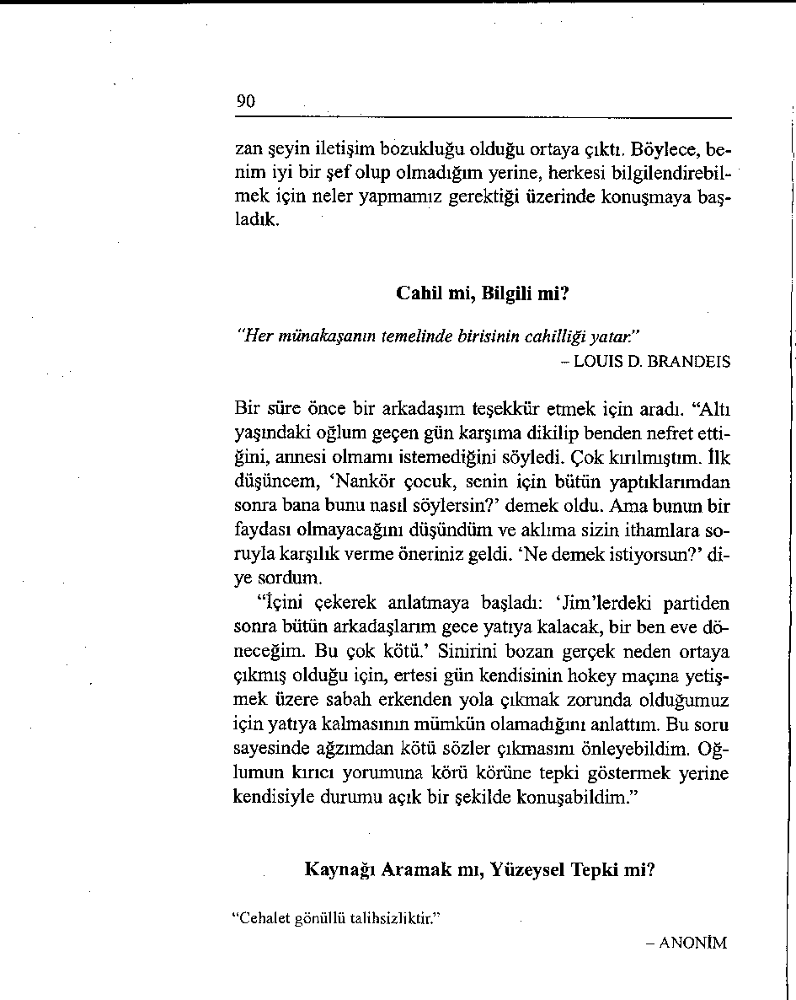

“Öfkenin en iyi ilacı geciktirmedir.”
- SENECA
Birisi beyninizdeki düşünceleri okursa nasıl tepki gösterirsi—
njz? Böyle bir durumda, “Ne demek istiyorsunuz?” sorusuyla
89
topu hemen karşı tarafa geri atın. Bu sorunun güzelliği çok çe şitli düzeylerde işlerli olmasındadır. “Ne demek istiyorsunuz?” sorusu:
• Bir şeyler söylemiş olmanızı sağlar.
• Öfkenizi geciktirir ve sizi saldırıya tepki göstermekten alıkoyar.
• Temelde yatan konuyu açığa çıkararak size gerçek
durum üzerine konuşma fırsatı verir.
• Kendinizi toparlamanız için zaman kazandırarak
düşüncelerinizi ileride pişman olmayacağınız bir
şeyler söyleyecek şekilde düzenlemenizi mümkün
kılar.
• Ham değil tersine zekice bir tepki işlevi görür.
Kıskançlığın hemen her zaman diğer kişinin durumunu bütünüyle yanlış yorumlamaktan kaynaklandığı söylenir. Öfke de öyledir. Bu konu bir seminerde gündeme geldiğinde, katılımcılardan biri gönüllü olarak söz alıp şöyle dedi: “Ben bu yöntemi geçen hafta farkında olmadan kullandım. Tek bildi ğim çok iyi işe yaradığı.” Şunları anlattı:
“Çalıştığım işyerinde altı ay önce terfi ettim, şimdi eski arkadaşlarımın şefiyim. Kibarca söylersek çok hassas bir durum. Cuma günü tam paydostan önce en beğendiğim elemanlarımdan biri odama geldi, kapıyı kapatıp koltuğa oturdu ve bana hiç de iyi bir şef olmadığımı söyledi.
“Afallamıştım. İnsan ilişkilerindeki becerileriyle övünen
birisiyim. Önce, elimden geleni yapmaya çalışıyorum demek
istedim, ama sonra bunun kendimi haklı gösterme çabası olarak algılanabileceğini düşündüm. Bunun yerine ne demek istediğini sordum.
“O zaman şunu dedi: ‘Kimse ne olup bittiğini bilmiyor.
Haftalardır ekip toplantısı yapmadık.’ Bu sayede asabını bo 
90
zan şeyin iletişim bozukluğu olduğu ortaya çıktı. Böylece, benim iyi bir şef olup olmadığım yerine, herkesi bilgilendirebil-mek için neler yapmamız gerektiği üzerinde konuşmaya başladık.
Cahil mi, Bilgili mi?
‘‘Her münakaşanın temelinde birisinin cahilliği yatar."
- LOUIS D. BRANDEIS
Bir süre önce bir arkadaşım teşekkür etmek için aradı. “Altı
yaşındaki oğlum geçen gün karşıma dikilip benden nefret etti ğini, annesi olmamı istemediğini söyledi. Çok kırılmıştım. îlk
düşüncem, ‘Nankör çocuk, senin için bütün yaptıklarımdan
sonra bana bunu nasıl söylersin?’ demek oldu. Ama bunun bir
faydası olmayacağını düşündüm ve aklıma sizin ithamlara soruyla karşılık verme öneriniz geldi. ‘Ne demek istiyorsun?’ diye sordum.
“İçini çekerek anlatmaya başladı: ‘Jim’lerdeki partiden
sonra bütün arkadaşlarım gece yatıya kalacak, bir ben eve döneceğim. Bu çok kötü.’ Sinirini bozan gerçek neden ortaya çıkmış olduğu için, ertesi gün kendisinin hokey maçına yetişmek üzere sabah erkenden yola çıkmak zorunda olduğumuz için yatıya kalmasının mümkün olamadığını anlattım. Bu soru sayesinde ağzımdan kötü sözler çıkmasını önleyebildim. Oğlumun kırıcı yorumuna körü körüne tepki göstermek yerine kendisiyle durumu açık bir şekilde konuşabildim.”
Kaynağı Aramak mı, Yüzeysel Tepki mi?
“Cehalet gönüllü talihsizliktir.”
- ANONİM
91
Aşağıdaki öykü, sorunlu bir duruma yol açan nedeni açığa
çıkarmanın niçin önemli olduğunun başka bir örneğini sunmaktadır.
Öğretmenin biri yağmurlu geçen bir hafta sonundan sonra
sabah içeri girdiğinde sınıfın ortasında yerde bir su birikintisi
görür. Hademeyi çağırıp birikintiyi gösterir, o da bir bez getirip suyu kurular ve yeri siler. Ertesi sabah aynı senaryo tekrarlanır.
Öğretmen üçüncü gün sınıfa girdiğinde gene su birikintisiyle karşılaştığında bina amirini arayarak, “Üç gündür aynı durumla karşılaşıyorum. Lütfen gelip bir bakar mısınız?” der.
Yaşlı teknisyen birkaç dakika sonra kapıda göründüğünde
elinde bez yoktur. Öğretmen şaşkın bir bakışla, “Yeri nasıl sileceksiniz?” diye sorar. “Silmeyeceğim” der usta, “Ben sızıntıyı gidereceğim.”
Birisi yanlış ya da kaba bir şey yaptığında, insanlar çoğu
zaman “su birikintisini silmeye” çalışıyor. Problemin kaynağını arayıp tamir etmek yerine yüzeyde görünen şeye tepki gösteriyorlar.
Akıllarından Geçeni Okuyun
“incelik aslında bir tür akıl okıımadır.”
- SARAH ORNE JEWETT
Birkaç yıl önce kilisedeki bir düğün provasına katılmıştım.
Koridordaki kafilede yer alan ve ellerinde çiçek buketi taşıyan
beş yaşındaki kız birden huysuzlaştı ve devam etmek istemediğini söyledi. Annesi, kızını disipline etme çabasıyla hemen dışarı çıkardı.
Birkaç dakika sonra kiliseye yeniden girdiklerinde kız gene
aynı huysuzluğu yaptı. Utanç içindeki anne, uslu davranması
için kızını azarlamakla yalvarmak arasında gidip geliyordu.
92
İki yaklaşım da işe yaramadı ve çocuk surat asmaya devam
etti.
Tam gelinle damadın sabrı tükenmek üzereyken kızın büyükannesi yavaşça sordu: “Lisa, sen bugün yemekten sonra uyudun mu?” Küçük kız hayır anlamında kafasını salladı. Huzursuzluğunun asıl sebebi işte ortaya çıkmıştı. Yaşlı kadın, yorgun ve aşırı heyecanlı torununun azara değil uykuya ihtiyacı olduğunu biliyordu. Kızı kollarına alıp arkada bir yerdeki bir sıraya yatırdı ve sakinleştirici bir ninni söylemeye başladı.
Kız birkaç dakika sonra uykuya dalmıştı.
Büyükannenin gergin bir duruma böyle bilgece yaklaşmasına tanık olduğum için kendimi çok talihli hissettim. Kızın davranışı karşısında anne sadece su birikintisini siliyor, o yüzden de birikinti yeniden ortaya çıkıyordu. Küçük kızın “aklını okuyan”, onun ne hissettiğine duyarlı olan büyükanne ise, ger çekte ne olduğunu tahmin edip arızayı giderebiliyordu.
Bu, sizin açınızdan ne anlama gelebilir? Birisi yanlış bir
davranış içindeyse iki tercihiniz olabilir. Ya şikâyet edersiniz
ya da soru sorabilirsiniz. Çoğu zaman söz topunu konuşma sahasının karşı tarafına geri atarak sorunun nedenini açığa çıkarabilirsiniz. “Niçin böyle düşünüyorsunuz?” ya da “Ne demek istiyorsunuz?” gibi sorularla, arzu edilmeyen davranışların kaynaklarını saptayarak giderme yolunda adımlar atabilirsiniz.
93
NE SÖYLEYECEĞİNİZİ BİLMEDİĞİNİZDE
SÖYLENEBİLECEK ŞEYLER İÇİN EYLEM PLANI
Çalışma gününüz oldukça zorlu geçti. Bütün arzunuz bir an önce
evde olmak, ayaklarınızı uzatıp dinlenmek. Eve vardığınızda karınızı sinirli bir halde buluyorsunuz. Yemekte ne olduğunu soruyorsunuz, o da öfkeli bir şekilde, “Bir yere gitmez olduk, çok sıkılıyorum” diyor. Böyle bir söz bu akşam en son duymak istediğiniz şey ve ne söyleyeceğinizi bilemiyorsunuz.
UNUTMANIZ GEREKEN
KULLANMANIZ
SÖZLER
GEREKEN SÖZLER
Duygusal red tepkisi gösterir Gerçekte ne olduğunu araştırırsiniz. (Bu ise, “Evet gidiyo—
sınız.
ruz/Hayır gitmiyoruz” müna “Bununla ne demek istiyor kaşasını başlatabilir.)
sun?"
“Geçen hafta sonu panayıra
gitmedik mi? ”
Olayı önemsizleştirir ve ham
Bilgi almaya çalışırsınız.
bir yanıt verirsiniz.
“Niçin böyle diyorsun, sevgi “Başkalarından çok daha fazla
lim?"
çıkıyoruz."
Yanlış olduğunu kanıtlamaya
Kendinizi savunmaya çalışma çalışır ve söz savaşını başlatıryarak söz savaşından kaçınırsısınız.
nız.
“Seni yemeğe çıkarıp sonra da
“Böyle düşünmenin sebebi neistediğin filme götürmedim
dir? ”
mi?"
Yüzeyde olana tepki gösterir
Sinir boşalmasının nedenini
ve işin özünü gözden kaçırırsıbulup sızıntıyı giderirsiniz.
nız.
“Barb'la Bili dans dersi alı “Bak, haftada elli saat çalışıyorlarmış v e ...”
yorum. Dışarı çıkmaya, orada
burada dolaşmaya hiç halim
yok.”
“İşimiz geçmişin sorumluluğunu değil,
geleceğin rotasını belirlemektir.”
- JOHN F. KENNEDY
ı|T
iıTit^ıHtıHîraW
i^ W*1fT
ı^ıt^ 1
Dokuzuncu Bölüm
Hata Değil Çözüm Bulun
Sonuçta insan suçlama ve hata bulma yarışına dönüşen bir
grup tartışmasında bulunduğunuz hiç oldu mu? Hoş olmuyor,
değil mi?
Bir hanım birkaç gün önce insanların bütün gün birbirini
suçladığı bir toplantıya katılmış olduğunu anlattı: “Aylık kadro toplantımızı yapıyorduk. Patron bütçe raporlarını görmek istedi. Muhasebecimizin yüzü asıldı ve çekine çekine raporların elinde olmadığını söyledi. Genel müdür bunun nedenini sordu.
“Muhasebeci bunun kendi hatası olmadığını ileri sürdü, pazarlama bölümü nihai rakamları vermemişti. Pazarlama müdürü işi aksatanın kendisi olmadığını, tahminlerin kendisine ulaşmadığını, bir haftadır veri işlemde beklediğini söyledi. Veri işlem temsilcisi taslakların birkaç gün önce eline geçtiğini, şefi şehir dışında olduğu için rakamlara ilişkin nihai onayı alamadığını anlattı... ve böyle sürüp gitti.”
95